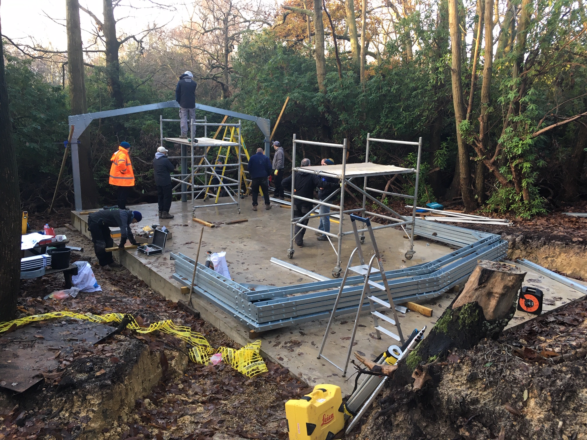
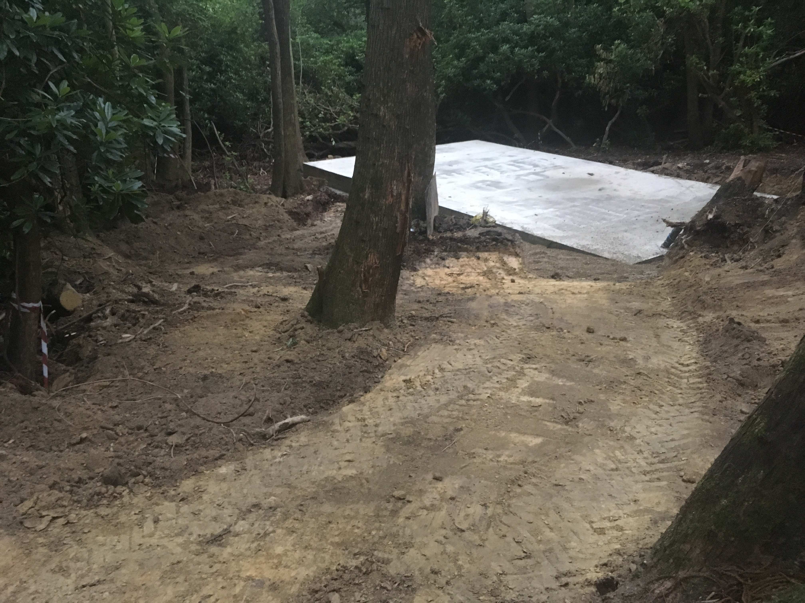

Horsham District Scouts
Artificial Cave Project

Horsham District Scouts are building an Artificial Cave system at the Beacon Hill campsite. Caving is both a physically and mentally challenging sport and a perfect addition to the activities offered by Horsham Scouts to promote healthy lifestyles, and physical and emotional development in young people. The facility will provide a safe and exciting environment that will be used by Scouts, Guides and other interested groups such as the South East Cave Rescue Organisation (SECRO).
The project is inspired by the late Paul Dold, who sadly died in 2016. Paul was a Horsham scout leader who was introduced to caving through Scouts – and was passionate about introducing future generations to caving.
Full permissions, including Planning Permission, were obtained during 2018. Phase 2, to prepare the site and construct the building, is underway. We are now fundraising for Phase 3, the installation of the Artificial Cave System.
Funding Progress
£40,000.00 out of £120,000.00
Latest Project News
- Build Begins
Since the last update lots have happened. On the weekend 29th,30th of November and the 1st of December a working group of skilled volunteers met at the Horsham District Scout Campsite and in the weekend erected the building for the artificial cave to be housed in. The weather was kind and the building took shape rapidly. Those involved worked incredibly hard, including Beryl Dold the single handed tea making catering team.
I would like to say a massive Thank you to all who gave up their weekend and worked so hard.
On the Thursday after at 8.30am a lorry arrived at the Campsite loaded with a 40’ shipping container. This was the delivery of the artificial cave system that was purchased from Oman. The container doors were opened and from front to back, top to bottom the container was packed full of cave components. Again a team of willing volunteers gave up there time to help unload the container and put all the cave components into the new erected building.
January the 6th saw the electrician start work fitting the building with power and lights.

- Cave Purchased!
In June I was contacted by a Colin Boothroyd of Entre Prise international. They are one of the companies that we have been working with, to buy and install an artificial cave at our Scout campsite. Colin had been contacted by a customer wishing to sell their extensive cave system for a good price. A call to Colin revealed that the cave in question is in Oman. It took a few months of working out the logistics of buying a cave in Oman and shipping it to Horsham districts scout campsite. However at the end of August the cave project team agreed to go ahead and buy the Oman cave system.
Over the last few months Entre Prises caves have been working with us to redesign the cave in Oman to fit in the building that will house the cave at the Horsham District Scout Campsite. Horsham Scouts will get approximately 66m of Cave to put in the building. Because the Oman cave is going to be larger than the building at the Horsham campsite, two other caves have been designed out of the leftover cave components. The other two designed systems have been sold to two other Scout campsites in the Uk. One cave will go to a Scout Activity centre in Glasgow, and the other to a Scout campsite in Lincoln. The sale of the leftover cave means the Horsham cave project has enough money to finish the whole project by next spring.
We have now ordered the building for the cave to be installed into. It will arrive at the end of October in kit form. We will then have a working weekend on the 30th of November and 1st December to build it.
On the 14th of October a rep from Entre Prises was sent to Oman and has dismantled the cave and packed three 40’ shipping containers. These will be loaded on a boat and shipped on the 21st of October.
Hopefully we will take delivery of a cave system mid November. The erection of the cave building and installation of the cave will be done by volunteer working groups over the next few months.
The project has had some incredible contributions to allow it to progress so rapidly. There have been successful grant applications, generous financial donations, a website created and an fantastic donation of the groundwork’s and concrete pad for the cave to go on. A huge thank you to all who have contributed to this project.
- Groundwork completed by GPB Construction LTD and Kier 
- Making caving accessible (Descent April/May 2019)

- Digging Deep For Caving Dream (All About Horsham)